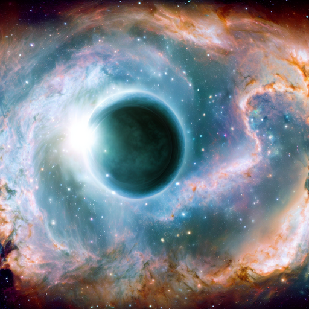

Ojo de Dios
La nebulosa llamada Ojo de Dios, también conocida como nebulosa Helix o NGC 7293, es una nebulosa planetaria ubicada en la constelación de Acuario. Se trata de una estructura de gas y polvo que rodea una estrella moribunda similar al Sol. La nebulosa Helix se forma cuando una estrella similar al Sol agota su combustible nuclear y expulsa sus capas exteriores al espacio. En el caso de esta nebulosa, se cree que la estrella central que la generó es una enana blanca caliente y densa.
